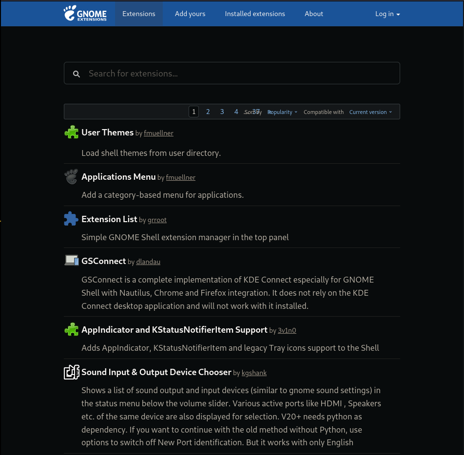
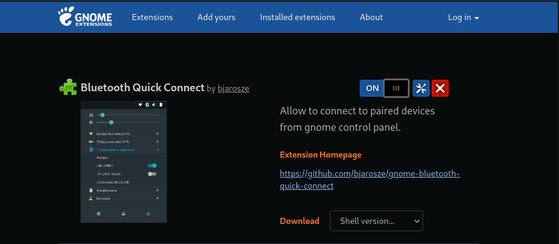
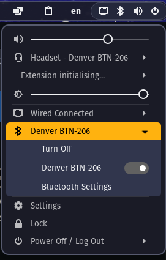
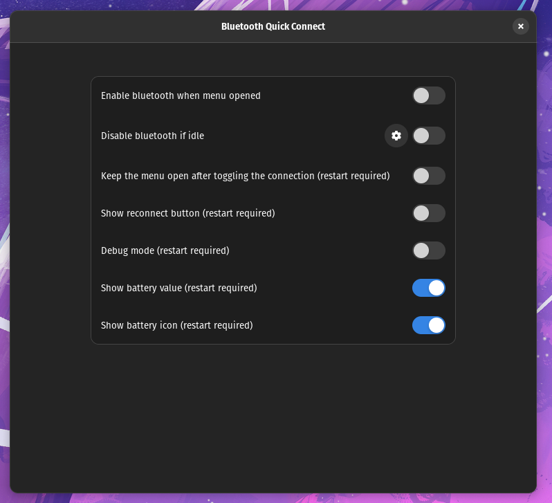
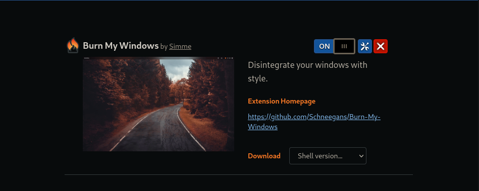
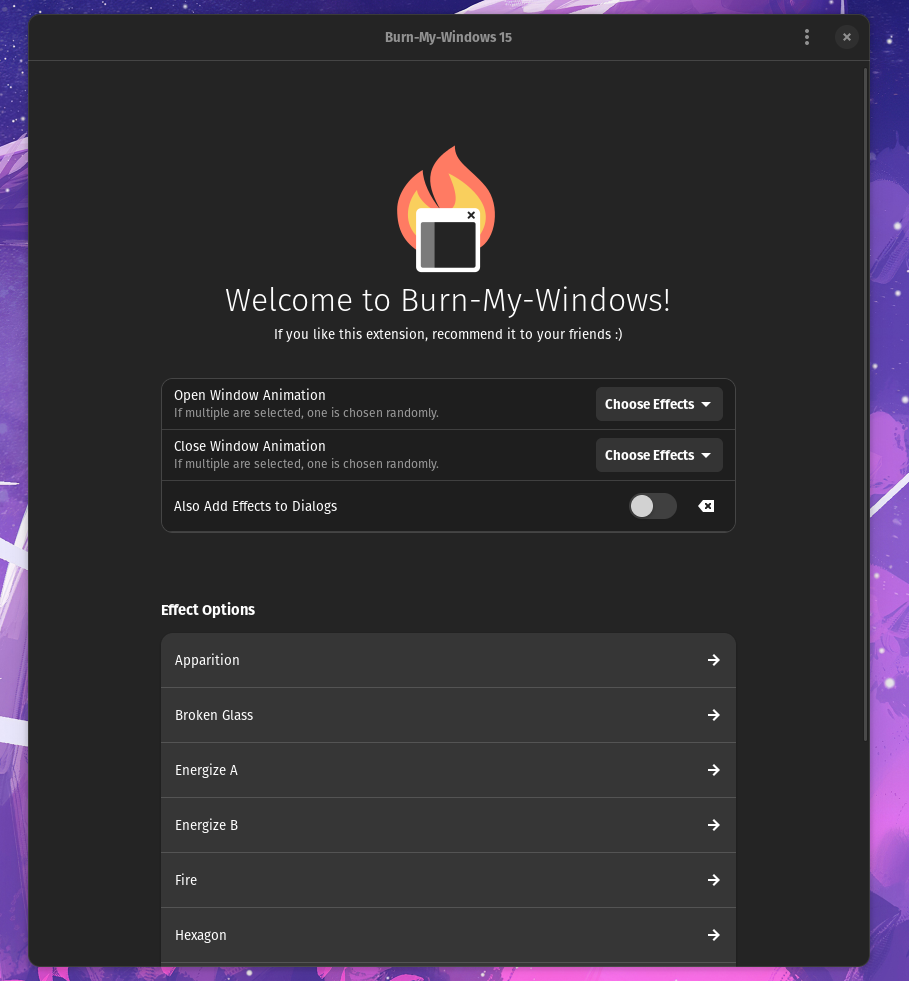
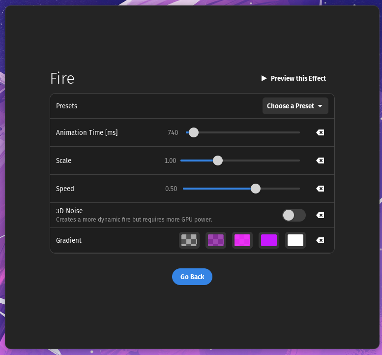
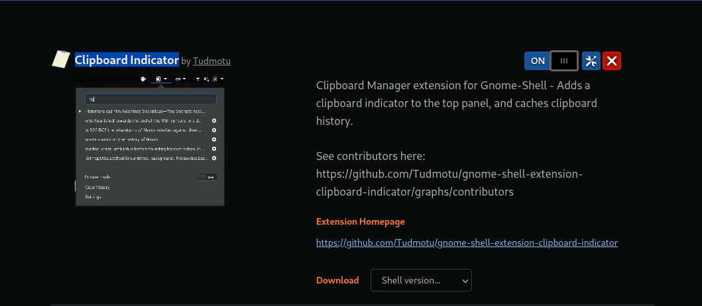
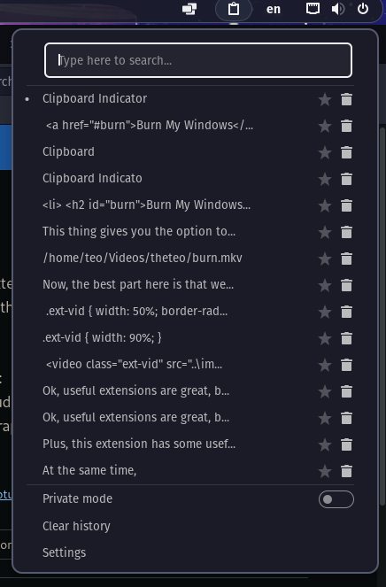
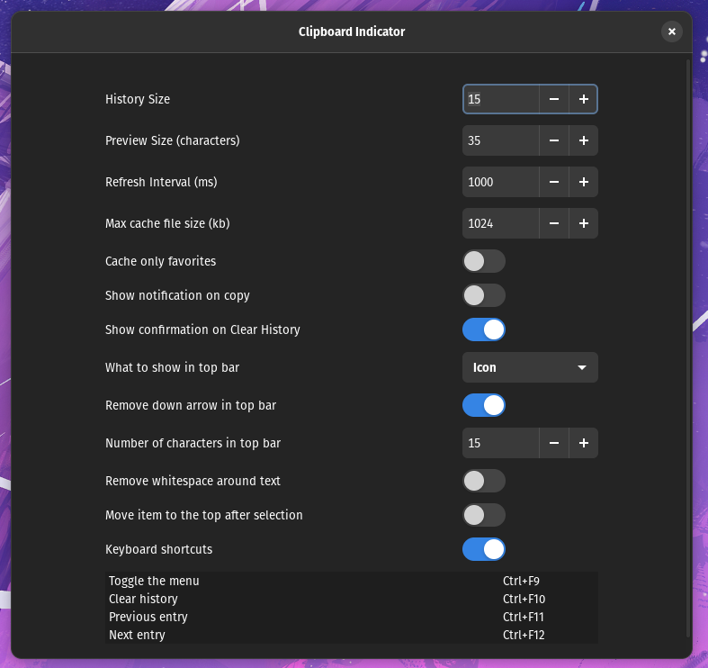

Gnome Extensions
date:30/04/2022
Jump to content:
*press the photos to access their website*
Today we're gonna dive into the endless world of gnome extensions. There are a lot of good ones out there, but, as always, I'll speak only of the ones I'm using or I used.
Where to find them?
Now, finding the right site is easy enough. You just have to open your chosen browser and search for, well, "gnome extensions".
The most used one is gnome extensions. This is it:
-
Bluetooth Quick Connect
The name of this extension already explains its purpose. It adds in the gnome control panel an easy way to access your Bluetooth devices. This makes it faster to run through your gadgets.
With the theme I use it looks like this:
Personally, I find this one very useful since I tend to circle through my headsets pretty often. Saving time is always my priority.
Plus, this extension has some useful settings. Such as:
 -
Burn My Windows
Ok, useful extensions are great, but what about fun ones? Burn My Windows is one of my favourite extensions. Especially because it makes my PC look sick.
This thing gives you the option to choose from a range of animations and to set to for when a window is opened or closed.
Let me show you how it looks:
Now, the best part here is that we have the power to customise however we like. We can play with speed, colours and so on.
  -
Clipboard Indicator
Let's see another useful extension. You don't think you need one of these until you lose an important text you just copied or until you need to copy and paste for eternity. Clipboard Indicator has saved me from losing my writing a thousand times.
This is how it looks with the theme I have:
And, these are the settings that come with it:
So, you can make sure that it suits your workflow.
This is all I had for today. I might make a part two in the future since there are a lot of great extensions out there.